ggplot, ggplot
Train markdown, ggplot https://clauswilke.com/dataviz/
library packages
rm(list = ls())
library(ggplot2)
library(dplyr)
다음의 패키지를 부착합니다: 'dplyr'The following objects are masked from 'package:stats':
filter, lagThe following objects are masked from 'package:base':
intersect, setdiff, setequal, unionlibrary(ggrepel)
library(cowplot)
library(colorspace)
library(stringr)
library(geojsonsf)
library(sf)Linking to GEOS 3.9.3, GDAL 3.5.2, PROJ 8.2.1; sf_use_s2() is TRUElibrary(forcats)
library(tidyr)mpg datasets
Read data, check dimension and data summary
data_raw <- read.csv("https://vincentarelbundock.github.io/Rdatasets/csv/ggplot2/mpg.csv")
data_raw %>% dim()[1] 234 12data_raw %>% head() X manufacturer model displ year cyl trans drv cty hwy fl class
1 1 audi a4 1.8 1999 4 auto(l5) f 18 29 p compact
2 2 audi a4 1.8 1999 4 manual(m5) f 21 29 p compact
3 3 audi a4 2.0 2008 4 manual(m6) f 20 31 p compact
4 4 audi a4 2.0 2008 4 auto(av) f 21 30 p compact
5 5 audi a4 2.8 1999 6 auto(l5) f 16 26 p compact
6 6 audi a4 2.8 1999 6 manual(m5) f 18 26 p compactdata_raw %>% summary() X manufacturer model displ
Min. : 1.00 Length:234 Length:234 Min. :1.600
1st Qu.: 59.25 Class :character Class :character 1st Qu.:2.400
Median :117.50 Mode :character Mode :character Median :3.300
Mean :117.50 Mean :3.472
3rd Qu.:175.75 3rd Qu.:4.600
Max. :234.00 Max. :7.000
year cyl trans drv
Min. :1999 Min. :4.000 Length:234 Length:234
1st Qu.:1999 1st Qu.:4.000 Class :character Class :character
Median :2004 Median :6.000 Mode :character Mode :character
Mean :2004 Mean :5.889
3rd Qu.:2008 3rd Qu.:8.000
Max. :2008 Max. :8.000
cty hwy fl class
Min. : 9.00 Min. :12.00 Length:234 Length:234
1st Qu.:14.00 1st Qu.:18.00 Class :character Class :character
Median :17.00 Median :24.00 Mode :character Mode :character
Mean :16.86 Mean :23.44
3rd Qu.:19.00 3rd Qu.:27.00
Max. :35.00 Max. :44.00 Drop index column followed during data load
data_use <- data_raw %>% select(-1)
data_use %>% head() manufacturer model displ year cyl trans drv cty hwy fl class
1 audi a4 1.8 1999 4 auto(l5) f 18 29 p compact
2 audi a4 1.8 1999 4 manual(m5) f 21 29 p compact
3 audi a4 2.0 2008 4 manual(m6) f 20 31 p compact
4 audi a4 2.0 2008 4 auto(av) f 21 30 p compact
5 audi a4 2.8 1999 6 auto(l5) f 16 26 p compact
6 audi a4 2.8 1999 6 manual(m5) f 18 26 p compactscatter plot
Use displ and hwy
displ : Displacement
hwy : Highway fuel economy
ggplot(data_use, aes(x=displ, y=hwy)) +
geom_point()
smooth line
ggplot(data_use, aes(x=displ, y=hwy)) +
geom_smooth()`geom_smooth()` using method = 'loess' and formula = 'y ~ x'
scatter & smooth line
ggplot(data_use, aes(x=displ, y=hwy)) +
geom_point() +
geom_smooth()`geom_smooth()` using method = 'loess' and formula = 'y ~ x'
Boxplot example
hwy average per class
mpg %>%
ggplot(mapping = aes(x=class, y=hwy, fill=class))+
geom_boxplot()
Group_by, errorbar example
mpg %>%
group_by(class) %>%
summarize(mean = mean(hwy), sd = sd(hwy)) %>%
ggplot(aes(x=class, y=mean, fill=class))+
geom_bar(stat = "identity")+
geom_errorbar(
aes(ymin=mean-sd, ymax=mean+sd),
width = 0.5,
position = position_dodge(width = 0.9))
ncdc_normals
The U.S. Climate Normals are a large suite of data products that provide information about typical climate conditions for thousands of locations across the United States.
Load data
data_file <- read.csv("C:/sanai_sungil/posts/vis/ncdc_normals.csv")Check data information
dim(data_file)[1] 2745366 6data_file %>% head() station_id month day temperature flag date
1 AQW00061705 1 1 82.4 C 0000-01-01
2 AQW00061705 1 2 82.4 C 0000-01-02
3 AQW00061705 1 3 82.4 C 0000-01-03
4 AQW00061705 1 4 82.4 C 0000-01-04
5 AQW00061705 1 5 82.4 C 0000-01-05
6 AQW00061705 1 6 82.4 C 0000-01-06data_file %>% sapply(class) # 날짜 형식 변경 station_id month day temperature flag date
"character" "integer" "integer" "numeric" "character" "character" Convert date format (character -> date)
data_file$date <- data_file$date %>% as.Date("%Y-%m-%d")There are 7501 measurement locations
data_file$station_id %>% unique() %>% length()[1] 7501Specifying 4 Station and use join() function
station_loc <- data.frame(station_id = c("USW00014819","USC00042319","USW00093107","USW00012918"),
location = c("Chicago","Death valley","San diego","Houston"))temps_long <- data_file %>% inner_join(station_loc,by="station_id")
temps_long %>% head() station_id month day temperature flag date location
1 USC00042319 1 1 51.0 S 0000-01-01 Death valley
2 USC00042319 1 2 51.2 S 0000-01-02 Death valley
3 USC00042319 1 3 51.3 S 0000-01-03 Death valley
4 USC00042319 1 4 51.4 S 0000-01-04 Death valley
5 USC00042319 1 5 51.6 S 0000-01-05 Death valley
6 USC00042319 1 6 51.7 S 0000-01-06 Death valleyLine plot by location
ggplot(temps_long, aes(x=date,y=temperature,color=location))+
geom_line()
Create a scale to display on the x-axis.
date_s <- "0000-01-01" %>% as.Date("%Y-%m-%d") #Y는 대문자
date_e <- "0001-01-01" %>% as.Date("%Y-%m-%d")
break_date <- seq.Date(date_s, date_e, by = "3 month")Line plot, date x scale
ggplot(temps_long, aes(x=date, y=temperature, color=location))+
geom_line()+
scale_x_date(name="month",
breaks = break_date,
labels = c("jan", "apr", "jul", "oct", "jan"))+
theme_light()
Line plot, date x scale, y limits, labs variable
ggplot(temps_long, aes(x=date, y=temperature, color=location))+
geom_line()+
scale_x_date(name="month",
breaks = break_date,
labels = c("jan", "apr", "jul", "oct", "jan"))+
scale_y_continuous(name = "temp",
limits = c(20,105))+
theme_light()+
labs(title = "title", subtitle = "subtitle", caption = "caption", tag = "tag")
Tile plot, mean temperature by month, location
mean_temps <- temps_long %>%
group_by(month,location) %>%
summarize(mean = mean(temperature)) %>%
ungroup() %>%
mutate(month = factor(month %>% paste(),
levels = 1:12 %>% paste()))`summarise()` has grouped output by 'month'. You can override using the
`.groups` argument.Viridis is Color Palette
ggplot(mean_temps,aes(x = month, y = location, fill = mean))+
geom_tile(width = .95,height = 0.95)+
scale_fill_viridis_c(option = "B",begin = 0.15, end = 0.98,
name = "temperature")+
coord_fixed(expand = FALSE)+
ylab(NULL)
Pie chart, Polar coordinates
The polar coordinate system is most commonly used for pie charts, which are a stacked bar chart in polar coordinates.
format(x,"%B") Outputs unabbreviated month
date_lab <- format(break_date,"%B")
date_lab[1] "1월" "4월" "7월" "10월" "1월" ggplot(temps_long, aes(x=date,y=temperature,color=location))+
geom_line(linewidth = 1.1)+
scale_x_date(name = "month",
breaks = break_date,
labels = date_lab)+
scale_y_continuous(name = "temperature",
limits = c(0,105))+
coord_polar(theta = "x",
start = pi,
direction = 1)+
theme_light()+
theme(panel.border = element_blank())
OBS ASOS 2021 Korea
Observations Automated Surface Observing System
Average, minimum, and maximum temperatures by region(서울, 대전, 세종, 제주)
Load data
data_2021 <- read.csv("https://raw.githubusercontent.com/Sungileo/trainsets/main/OBS_ASOS_DD_20220308125952.csv", fileEncoding = "euc-kr")Check data information
data_2021 %>% dim()[1] 1460 6data_2021 %>% head() 지점 지점명 일시 평균기온..C. 최저기온..C. 최고기온..C.
1 108 서울 2021-01-01 -4.2 -9.8 1.6
2 108 서울 2021-01-02 -5.0 -8.4 -1.4
3 108 서울 2021-01-03 -5.6 -9.1 -2.0
4 108 서울 2021-01-04 -3.5 -8.4 0.3
5 108 서울 2021-01-05 -5.5 -9.9 -2.1
6 108 서울 2021-01-06 -7.4 -12.0 -1.9data_2021 %>% sapply(class) 지점 지점명 일시 평균기온..C. 최저기온..C. 최고기온..C.
"integer" "character" "character" "numeric" "numeric" "numeric" Convert date format (character -> date)
data_2021$일시 <-data_2021$일시 %>% as.Date("%Y-%m-%d")
data_2021 %>% sapply(class) 지점 지점명 일시 평균기온..C. 최저기온..C. 최고기온..C.
"integer" "character" "Date" "numeric" "numeric" "numeric" Summary data
data_2021 %>% summary() 지점 지점명 일시 평균기온..C.
Min. :108.0 Length:1460 Min. :2021-01-01 Min. :-14.90
1st Qu.:126.8 Class :character 1st Qu.:2021-04-02 1st Qu.: 7.90
Median :158.5 Mode :character Median :2021-07-02 Median : 15.00
Mean :166.0 Mean :2021-07-02 Mean : 14.77
3rd Qu.:197.8 3rd Qu.:2021-10-01 3rd Qu.: 23.10
Max. :239.0 Max. :2021-12-31 Max. : 31.70
최저기온..C. 최고기온..C.
Min. :-19.10 Min. :-10.70
1st Qu.: 3.10 1st Qu.: 13.18
Median : 11.10 Median : 20.15
Mean : 10.69 Mean : 19.56
3rd Qu.: 19.60 3rd Qu.: 27.70
Max. : 28.10 Max. : 36.50 Create a scale to display on the x-axis.
date_21s <- "2021-01-01" %>% as.Date("%Y-%m-%d") #Y는 대문자
date_21e <- "2022-01-01" %>% as.Date("%Y-%m-%d")
break_date_21 <- seq.Date(date_21s, date_21e, by = "3 month")Ploting
ggplot(data_2021,aes(x = 일시,y = 평균기온..C., color = 지점명))+
geom_line(linewidth = 1) +
scale_x_date(name ="월",
breaks = break_date_21,
labels = c("1월","4월","7월","10월","1월")) +
scale_y_continuous(name = "평균기온")+
theme_light()
OBS ASOS 2022 Korea
Same process
data_2022 <- read.csv("https://raw.githubusercontent.com/Sungileo/trainsets/main/OBS_ASOS_DD_20230322080932.csv", fileEncoding = "euc-kr")
data_2022$일시 <-data_2022$일시 %>% as.Date("%Y-%m-%d")data_2022 %>% summary() 지점 지점명 일시 평균기온..C.
Min. :108.0 Length:2555 Min. :2022-01-01 Min. :-11.80
1st Qu.:133.0 Class :character 1st Qu.:2022-04-02 1st Qu.: 8.20
Median :185.0 Mode :character Median :2022-07-02 Median : 16.40
Mean :175.1 Mean :2022-07-02 Mean : 15.27
3rd Qu.:189.0 3rd Qu.:2022-10-01 3rd Qu.: 23.00
Max. :239.0 Max. :2022-12-31 Max. : 32.20
NA's :2
최저기온..C. 최고기온..C.
Min. :-13.800 Min. :-8.60
1st Qu.: 4.225 1st Qu.:12.30
Median : 12.600 Median :20.75
Mean : 11.626 Mean :19.49
3rd Qu.: 19.800 3rd Qu.:27.20
Max. : 28.900 Max. :37.50
NA's :1 NA's :1 date_22s <- "2022-01-01" %>% as.Date("%Y-%m-%d") #Y는 대문자
date_22e <- "2023-01-01" %>% as.Date("%Y-%m-%d")
break_date_22 <- seq.Date(date_22s, date_22e, by = "3 month")data_2022$지점명 %>% unique()[1] "서울" "대전" "제주" "고산" "성산" "서귀포" "세종" Filter only 서울, 대전, 제주, 세종
data_2022_2 <- data_2022 %>% filter(data_2022$지점명 %in% c("서울","대전","제주","세종"))
data_2022_2$지점명 %>% unique()[1] "서울" "대전" "제주" "세종"ploting
ggplot(data_2022_2,aes(x = 일시,y = 평균기온..C., color = 지점명))+
geom_line(linewidth = 1) +
scale_x_date(name ="월",
breaks = break_date_22,
labels = c("1월","4월","7월","10월","1월")) +
scale_y_continuous(name = "평균기온")+
theme_light()
Tile plot, mean temperature by month, location
d <- data_2022_2 %>%
mutate(month = 일시 %>% format("%B")) %>%
group_by(month,지점명) %>%
summarize(mean = mean(평균기온..C.)) %>%
ungroup()`summarise()` has grouped output by 'month'. You can override using the
`.groups` argument.ggplot(d,aes(x = month, y = 지점명, fill = mean))+
geom_tile(width = .95,height = 0.95)+
scale_fill_viridis_c(option = "B",begin = 0.15, end = 0.99,
name = "temperature")+
coord_fixed(expand = FALSE)+
ylab(NULL)
Pie chart, Polar coordinates
ggplot(data_2022_2,aes(x = 일시,y = 평균기온..C., color = 지점명))+
geom_line(linewidth = 1) +
scale_x_date(name ="월",
breaks = break_date_22,
labels = c("1월","4월","7월","10월","1월")) +
scale_y_continuous(name = "평균기온",
limits = c(-20,35))+
coord_polar(theta = "x",
start = pi,
direction = 1)+
theme_light()+
theme(panel.border = element_blank())
ncdc normals Houston
Load & filter only Houston temperature
data_file <- read.csv("C:/sanai_sungil/posts/vis/ncdc_normals.csv")
data_file$date <- data_file$date %>% as.Date("%Y-%m-%d")
houston <- data.frame(station_id = c("USW00012918"), location = c("Houston"))
houston_temps <- data_file %>% inner_join(houston,by="station_id")
houston_temps %>% head() station_id month day temperature flag date location
1 USW00012918 1 1 53.9 S 0000-01-01 Houston
2 USW00012918 1 2 53.8 S 0000-01-02 Houston
3 USW00012918 1 3 53.8 S 0000-01-03 Houston
4 USW00012918 1 4 53.8 S 0000-01-04 Houston
5 USW00012918 1 5 53.8 S 0000-01-05 Houston
6 USW00012918 1 6 53.7 S 0000-01-06 HoustonSet X scale breaks, Plot
date_s <- "0000-01-01" %>% as.Date("%Y-%m-%d") #Y는 대문자
date_e <- "0001-01-01" %>% as.Date("%Y-%m-%d")
break_date <- seq.Date(date_s, date_e, by = "3 month")
ggplot(houston_temps, aes(x=date, y=temperature,color = location))+
geom_line(linewidth = 1,color = "royalblue")+
scale_x_date(name="month",
breaks = break_date,
labels = c("jan", "apr", "jul", "oct", "jan"))+
theme_light()+
ylab("Temperature(℉)")
Use cowplot package to arrange multiple plots into a grid
library(cowplot)Specify plot as a object houston_plot
houston_plot <- ggplot(houston_temps, aes(x=date, y=temperature,color = location))+
geom_line(linewidth = 1,color = "royalblue")+
scale_x_date(name="month",
breaks = break_date,
labels = c("jan", "apr", "jul", "oct", "jan"))+
theme_light()+
ylab("Temperature(℉)")arrange multiple plots into a grid
plot_ab <- plot_grid(houston_plot,houston_plot,
nrow = 1,
rel_widths = c(1,2),
labels = c("a","b"))
plot_abc <- plot_grid(plot_ab, houston_plot,
ncol = 1,
rel_heights = c(1.5,2),
labels = c("","c"))
plot_abc
Texas counties
Texas counties by land area, population, and population density
texas_cnt <- read.csv("https://raw.githubusercontent.com/christianmendoza/texas-counties/main/data/texas-counties.csv")
texas_cnt %>% head() county fips_code population area_sq_mi pop_per_sq_mi
1 Anderson 48001 58402 1071 54.53
2 Andrews 48003 18440 1501 12.29
3 Angelina 48005 86506 802 107.86
4 Aransas 48007 24510 252 97.26
5 Archer 48009 8681 910 9.54
6 Armstrong 48011 1839 914 2.01Select county, population columns
remove “county” word in county columns ex) “sungil county” -> “sungil”
calculate popratio = population/ meadian of total population
list in order of highest population
Create an index column with a number, Add labels to the top 3, bottom 3, and randomly determined values
runif(x) Outputs a random number between 0 and 1
tx_counties <- texas_cnt %>%
select(county,population) %>%
mutate(county = gsub("county","",county),
popratio = population/median(population)) %>%
arrange(desc(popratio)) %>%
mutate(index = 1:n(),
label = ifelse(index<=3|index>n()-3|runif(n())<.04, county, ""))
tx_counties %>% head() county population popratio index label
1 Harris 4728030 256.42857 1 Harris
2 Dallas 2586050 140.25654 2 Dallas
3 Tarrant 2126477 115.33122 3 Tarrant
4 Bexar 2028236 110.00304 4
5 Travis 1305154 70.78609 5
6 Collin 1109462 60.17258 6 ggrepel provides geoms for ggplot2 to repel overlapping text labels
library(ggrepel)point plot, overlapped text label
ggplot(tx_counties,aes(x=index,y=popratio))+
geom_hline(yintercept = 0, linetype = 2, color = "grey40")+
geom_point(size = 1, color = "royalblue")+
geom_text_repel(aes(label = label),
min.segment.length = 0,
max.overlaps = 100)+
theme_light()+
theme(panel.border = element_blank())
Point plot, y log scale
There are two main reasons to use logarithmic scales in charts and graphs. The first is to respond to skewness towards large values; i.e., cases in which one or a few points are much larger than the bulk of the data. The second is to show percent change or multiplicative factors.
label_log10 <- sapply(-2:2,function(i) as.expression(bquote(10^ .(i))))
ggplot(tx_counties,aes(x=index,y=popratio))+
geom_hline(yintercept = 1, linetype = 2, color = "grey40")+
geom_point(size = 1, color = "royalblue")+
geom_text_repel(aes(label = label),
min.segment.length = 0,
max.overlaps = 100)+
scale_y_log10(name = "popnumber/median",
breaks = 10^(-2:2),
labels = label_log10)+
scale_x_continuous(name = "Texas counties",
breaks = NULL)+
theme_light()+
theme(panel.border = element_blank())
시군구 인구수 2023년 2월
data_pop <- read.csv("https://raw.githubusercontent.com/Sungileo/trainsets/main/%ED%96%89%EC%A0%95%EA%B5%AC%EC%97%AD_%EC%8B%9C%EA%B5%B0%EA%B5%AC_%EB%B3%84_%EC%A3%BC%EB%AF%BC%EB%93%B1%EB%A1%9D%EC%84%B8%EB%8C%80%EC%88%98_202302.csv",encoding = "utf-8")
data_pop %>% head() 행정구역.시군구.별 X2022.11 X2022.12 X2023.01 X2023.02
1 종로구 72666 72524 72479 72773
2 중구 63167 63139 63123 63492
3 용산구 109905 109805 109734 109778
4 성동구 133435 133305 133293 133517
5 광진구 169376 169291 169416 169648
6 동대문구 170154 169873 169716 170766Same process
data_202302 <- data_pop %>%
filter(X2023.02>0) %>%
select(행정구역.시군구.별,X2023.02) %>%
mutate(popratio = X2023.02/median(X2023.02)) %>%
arrange(desc(popratio)) %>%
mutate(index = 1:n(),label = ifelse(index<=3|index>n()-3|runif(n())<.04, 행정구역.시군구.별, ""))data_202302 %>% head() 행정구역.시군구.별 X2023.02 popratio index label
1 수원시 530462 6.043498 1 수원시
2 고양시 462873 5.273464 2 고양시
3 창원시 456357 5.199228 3 창원시
4 용인시 432476 4.927154 4
5 성남시 409466 4.665003 5
6 청주시 394735 4.497175 6 Point plot
ggplot(data_202302,aes(x=index,y=popratio))+
geom_point(size = 1, color = "royalblue")+
geom_text_repel(aes(label = label),
min.segment.length = 0,
max.overlaps = 100)+
theme_light()+
theme(panel.border = element_blank())
Point plot, y log scale
label_log10 <- sapply(-2:2,function(i) as.expression(bquote(10^ .(i))))
ggplot(data_202302,aes(x=index,y=popratio))+
geom_point(size = 1, color = "royalblue")+
geom_text_repel(aes(label = label),
min.segment.length = 0,
max.overlaps = 100)+
scale_y_log10(name = "인구수/중위수",
breaks = 10^(-2:2),
labels = label_log10,
limits = c(10^-1.3,10^1.3))+
theme_light()+
theme(panel.border = element_blank())+
scale_x_continuous(name = "행정구역 (시군구)별 주민등록세대수",
breaks = NULL)
## RColorBrewer
library(colorspace)
RColorBrewer::display.brewer.all()
US census , US regions
US_census is dataset of population per region, age, human race
US_region is dataset of State informations
Load data
US_census <- read.csv("https://raw.githubusercontent.com/Sungileo/trainsets/main/drive-download-20230405T011215Z-001/US_census.csv")
US_regions <- read.csv("https://raw.githubusercontent.com/Sungileo/trainsets/main/drive-download-20230405T011215Z-001/US_regions.csv")Join & group by State
summaise 2000 population, 2010 population, population growth, total area size
popgrowth_df <- US_census %>% left_join(US_regions) %>%
group_by(region,division,state) %>%
summarize(pop2000 = sum(pop2000, na.rm = TRUE),
pop2010 = sum(pop2010, na.rm = TRUE),
popgrowth = (pop2010-pop2000)/pop2000,
area = sum(area)) %>%
arrange(popgrowth) %>%
ungroup() %>%
mutate(state = factor(state,levels = state),
region = factor(region, levels = c("West","South","Midwest","Northeast")))Joining with `by = join_by(state)`
`summarise()` has grouped output by 'region', 'division'. You can override
using the `.groups` argument.popgrowth_df %>% head()# A tibble: 6 × 7
region division state pop2000 pop2010 popgrowth area
<fct> <chr> <fct> <int> <int> <dbl> <dbl>
1 Midwest East North Central Michigan 9938444 9883640 -0.00551 56539.
2 Northeast New England Rhode Island 1048319 1052567 0.00405 1034.
3 South West South Central Louisiana 4468976 4533372 0.0144 43204.
4 Midwest East North Central Ohio 11353140 11536504 0.0162 40861.
5 Northeast Middle Atlantic New York 18976457 19378102 0.0212 47126.
6 South South Atlantic West Virginia 1808344 1852994 0.0247 24038.Plot with color
Set Colorspace
region_colors <- c("#E69F00","#56B4E9","#009E73","#F0E442")
state_colors <- region_colors[as.numeric(popgrowth_df$region)]
state_colors_dark = colorspace::darken(state_colors,0.4)
ggplot(popgrowth_df,aes(x = state, y = 100*popgrowth, fill = region))+
geom_col()+
scale_y_continuous(name = "population growth, 2000 to 2010",
labels = scales::percent_format(scale = 1),
expand = c(0,0))+
scale_fill_manual(values = region_colors)+
coord_flip()+
theme_light()+
theme(panel.border = element_blank(),
panel.grid.major.y = element_blank(),
axis.title.y = element_blank(),
axis.ticks.length = unit(0,"pt"),
axis.text.y = element_text(size=10,color = state_colors),
legend.position = c(.6,.5),
legend.background = element_rect(fill="#FFFFFFb0"))Warning: Vectorized input to `element_text()` is not officially supported.
ℹ Results may be unexpected or may change in future versions of ggplot2.
Plot lighten
highlightinh Texas, Louisiana, NA
region_colors <- c("#E69F00","#56B4E9","#009E73","#F0E442") %>%
lighten(0.4) %>% desaturate(0.8)
popgrowth_df_2 <- popgrowth_df %>%
mutate(region_highlight = ifelse(state %in% c("Texas","Louisiana"), NA, region %>% paste()))
popgrowth_df_2 %>% head()# A tibble: 6 × 8
region division state pop2000 pop2010 popgro…¹ area regio…²
<fct> <chr> <fct> <int> <int> <dbl> <dbl> <chr>
1 Midwest East North Central Michigan 9.94e6 9.88e6 -0.00551 56539. Midwest
2 Northeast New England Rhode Is… 1.05e6 1.05e6 0.00405 1034. Northe…
3 South West South Central Louisiana 4.47e6 4.53e6 0.0144 43204. <NA>
4 Midwest East North Central Ohio 1.14e7 1.15e7 0.0162 40861. Midwest
5 Northeast Middle Atlantic New York 1.90e7 1.94e7 0.0212 47126. Northe…
6 South South Atlantic West Vir… 1.81e6 1.85e6 0.0247 24038. South
# … with abbreviated variable names ¹popgrowth, ²region_highlightggplot(popgrowth_df_2, aes(x = state, y= 100*popgrowth, fill = region_highlight))+
geom_col()+
scale_y_continuous(name = "Population growth, 2000to 2010",
labels = scales::percent_format(scale=1),
expand = c(0,0))+
scale_fill_manual(values = region_colors,
breaks = c("West","South","Midwest","Northeast"),
na.value = "#56B4E9")+
coord_flip()+
theme_light()+
theme(panel.border = element_blank(),
panel.grid.major.y = element_blank(),
axis.title.y = element_blank(),
axis.ticks.length = unit(0,"pt"),
axis.text.y = element_text(size=10),
legend.position = c(.58,.68),
legend.background = element_rect(fill="#FFFFFFb0"))
2022 02 주민등록인구 및 세대 현황
Load & change type
kor_202202 <- read.csv("https://raw.githubusercontent.com/Sungileo/trainsets/main/202202_%EC%A3%BC%EB%AF%BC%EB%93%B1%EB%A1%9D%EC%9D%B8%EA%B5%AC%EB%B0%8F%EC%84%B8%EB%8C%80%ED%98%84%ED%99%A9.csv")
kor_202202 %>% head() 행정구역 행정구역_코드 총인구수 세대수 세대당_인구 남자_인구수
1 서울특별시 1100000000 9508451 4442586 2.14 4615823
2 서울특별시 종로구 1111000000 144575 73763 1.96 70092
3 서울특별시 중구 1114000000 122167 63644 1.92 59446
4 서울특별시 용산구 1117000000 222413 111134 2.00 106881
5 서울특별시 성동구 1120000000 285137 134286 2.12 138866
6 서울특별시 광진구 1121500000 340494 168975 2.02 164226
여자_인구수 남여_비율
1 4892628 0.94
2 74483 0.94
3 62721 0.95
4 115532 0.93
5 146271 0.95
6 176268 0.93kor_202202 %>% sapply(class) 행정구역 행정구역_코드 총인구수 세대수 세대당_인구
"character" "numeric" "numeric" "numeric" "numeric"
남자_인구수 여자_인구수 남여_비율
"numeric" "numeric" "numeric" kor_202202$행정구역_코드 <- kor_202202$행정구역_코드 %>% format() #numeric to stringfilter 서울, 대전 ,대구, 부산
kor_202202_use <- kor_202202 %>%
filter(substr(행정구역,1,2) %in% c("서울","대전","대구","부산")) %>%
filter(substr(행정구역_코드,3,4)!="00") %>%
select(행정구역,총인구수) %>%
arrange(총인구수)kor_202202_use$시도 = sapply(kor_202202_use$행정구역,
function(x) strsplit(x, " ")[[1]][1])
kor_202202_use$시도 = factor(kor_202202_use$시도,
levels = c("서울특별시","대전광역시","대구광역시","부산광역시"))
#kor_202202_use %>% View()kor_202202_use %>% head() 행정구역 총인구수 시도
1 부산광역시 중구 40582 부산광역시
2 대구광역시 중구 74710 대구광역시
3 부산광역시 동구 88245 부산광역시
4 부산광역시 서구 104618 부산광역시
5 부산광역시 영도구 109991 부산광역시
6 서울특별시 중구 122167 서울특별시kor_202202_use %>% summary() 행정구역 총인구수 시도
Length:54 Min. : 40582 서울특별시:25
Class :character 1st Qu.:207148 대전광역시: 5
Mode :character Median :305946 대구광역시: 8
Mean :309033 부산광역시:16
3rd Qu.:407067
Max. :661452 region_colors <- c("#E69F00","#56B4E9","#009E73","#F0E442")
region_colors_2 <- RColorBrewer::brewer.pal(4,"Set2")Plot with colors, Korea
ggplot(kor_202202_use,aes(x = reorder(행정구역, 총인구수),y= 총인구수, fill = 시도))+
geom_col()+
scale_y_continuous(name = "총인구수, 2022년 2월",
expand = c(0,0),
labels = scales::comma)+
scale_fill_manual(values = region_colors_2)+
coord_flip()+
theme_light()+
theme(panel.border = element_blank(),
panel.grid.major.y = element_blank())+
theme(axis.title.y = element_blank(),
axis.line.y = element_blank(),
axis.ticks.length = unit(0,"pt"),
axis.text.y = element_text(size = 8),legend.position = c(.78,.28),legend.background = element_rect(fill = "#FFFFFFB0"))
Highlight Daejeon (1)
region_colors <- c("#E69F00","#56B4E9","#009E73","#F0E442") %>%
lighten(0.4) %>% desaturate(0.8)
region_colors[2] <- "#56b4e9" %>% darken(0.3)
ggplot(kor_202202_use,aes(x = reorder(행정구역, 총인구수),y= 총인구수, fill = 시도))+
geom_col()+
scale_y_continuous(name = "총인구수, 2022년 2월",
expand = c(0,0),
labels = scales::comma)+
scale_fill_manual(values = region_colors)+
coord_flip()+
theme_light()+
theme(panel.border = element_blank(),
panel.grid.major.y = element_blank())+
theme(axis.title.y = element_blank(),
axis.line.y = element_blank(),
axis.ticks.length = unit(0,"pt"),
axis.text.y = element_text(size = 8),legend.position = c(.78,.28),legend.background = element_rect(fill = "#FFFFFFB0"))
Highlight Daejeon (2)
region_colors <- c("#E69F00","#56B4E9","#009E73","#F0E442") %>%
lighten(0.4) %>% desaturate(0.8)
kor_202202_use_2 <- kor_202202_use %>% mutate(region_highlight = ifelse(시도 %in% c("대전광역시"),NA,시도 %>% paste()))
ggplot(kor_202202_use_2,aes(x = reorder(행정구역,총인구수),y= 총인구수, fill = region_highlight))+
geom_col()+
scale_y_continuous(name = "총인구수, 2022년 2월",
expand = c(0,0),
labels = scales::comma)+
scale_fill_manual(values = region_colors,
breaks = c("서울특별시","대전광역시","대구광역시","부산광역시"),
na.value = "#56B4E9")+
coord_flip()+
theme_light()+
theme(panel.border = element_blank(),
panel.grid.major.y = element_blank())+
theme(axis.title.y = element_blank(),
axis.line.y = element_blank(),
axis.ticks.length = unit(0,"pt"),
axis.text.y = element_text(size = 8),legend.position = c(.78,.28),legend.background = element_rect(fill = "#FFFFFFB0")
)
Random p-value
set.seed(100)
df <- data.frame(p = runif(1000)) %>%
mutate(idx = 1:n(),
p_log10 = -log10(p))
df <- df %>%
arrange(p) %>%
mutate(idx_2 = 1:n(),
label = ifelse(idx_2<=3,p,""))
ggplot(df, aes(x=idx, y=p_log10)) +
geom_point(color = "darkblue") +
geom_hline(yintercept = -log10(0.05),
linetype = 2,
linewidth = 0.8,
color = "darkred") +
scale_y_continuous(name = expression(-log[10](italic(p)))) +
scale_x_continuous(name = "",
breaks = NULL) +
theme_minimal()+
geom_text_repel(aes(label = label),
min.segment.length = 0,
max.overlaps = 100)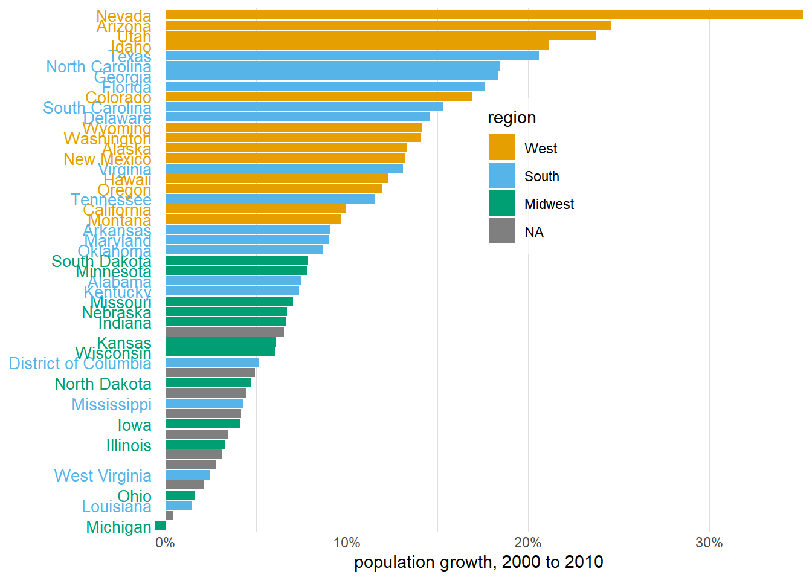
Visualizing amounts: 수량 데이터의 시각화
boxoffice <- read.csv("https://raw.githubusercontent.com/Sungileo/trainsets/main/boxoffice.csv")
boxoffice %>% ggplot(aes(x=fct_reorder(title,rank),y=amount))+
geom_col(fill="#56b4e9",width = 0.6,alpha = 0.9)+
scale_y_continuous(expand = c(0,0),
breaks = c(0,2e7,4e7,6e7),
labels = c(0,20,40,60),
name = "Weekend gross(million USD)")+
xlab("")+
theme_minimal()+
theme(
axis.ticks.y = element_blank(),
panel.grid.major.y = element_blank(),
axis.text.x = element_text(angle=45,hjust = 1)
)+
coord_flip()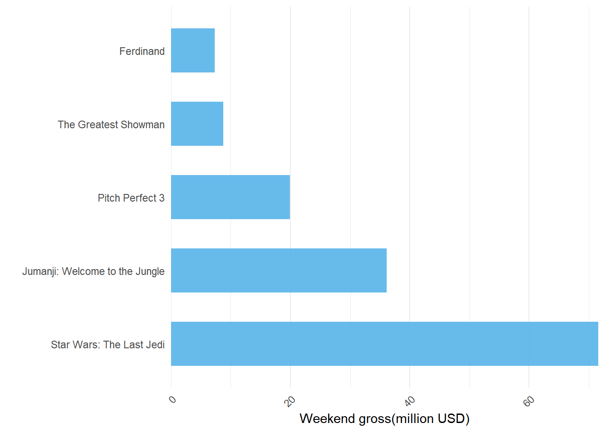
kobis <- read.csv("https://raw.githubusercontent.com/Sungileo/trainsets/main/KOBIS_%EC%8B%A4%EC%8B%9C%EA%B0%84_%EC%98%88%EB%A7%A4%EC%9C%A8_2023-04-26.csv")
kobis %>% filter(누적매출액>0) %>% head(5) %>%
ggplot(aes(x=reorder(영화명,-예매매출액),y=예매매출액))+
geom_col(fill="#56b4e9",width = 0.6,alpha = 0.9)+
scale_y_continuous(expand = c(0,0),
breaks = c(0,5e8,1e9,1.5e9),
labels = c(0,5,10,15),
name = "에매매출액(억원)")+
xlab("")+
theme_minimal()+
theme(
axis.ticks.x = element_blank(),
panel.grid.major.x = element_blank())
income_by_age <- read.csv("https://raw.githubusercontent.com/Sungileo/trainsets/main/income_by_age.csv")
income_by_age <- income_by_age %>%
mutate(age = age %>% factor(levels = c("15 to 24",
"25 to 34",
"35 to 44",
"45 to 54",
"55 to 64",
"65 to 74",
"> 74")))
income_df <- income_by_age %>%
filter(race %in% c("white","asian","black","hispanic")) %>%
mutate(race = fct_relevel(race,c("asian","white","hispanic","black")),
race = fct_recode(race,"Asian"="asian","Hispanic"="hispanic"),
age = fct_recode(age,">= 75" = "> 74"))
colors_four <- RColorBrewer::brewer.pal(5,"PuBu")[5:2]
income_df %>% ggplot(aes(x=age,y=median_income,fill=race))+
geom_col(position = "dodge",alpha = 0.9)+
scale_fill_manual(values = colors_four,name=NULL)+
xlab("age (years)")+
scale_y_continuous(expand = c(0,0),
name = "Median income (USD)",
breaks = c(seq(0,100,20)*1000),
labels = c(seq(0,100,20)*1000) %>% paste())+
theme_minimal()
colors_seven <- RColorBrewer::brewer.pal(8,"PuBu")[2:8]
income_df %>% ggplot(aes(x=race,y=median_income,fill=age))+
geom_col(position = "dodge",alpha=0.9)+
scale_fill_manual(values = colors_seven,name=NULL)+
xlab(NULL)+
scale_y_continuous(expand = c(0,0),
name = "Median income (USD)",
breaks = c(seq(0,100,20)*1000),
labels = c(seq(0,100,20)*1000) %>% paste())+
theme_minimal()
income_df %>% ggplot(aes(x=age,y=median_income))+
geom_col(fill = "#56b4e9",alpha = 0.9)+
xlab("age (years)")+
scale_y_continuous(expand = c(0,0),
name = "Median income (USD)",
breaks = c(seq(0,100,20)*1000),
labels = c(seq(0,100,20)*1000) %>% paste())+
theme_minimal()+
theme(panel.grid.major.x = element_blank(),
axis.ticks.x = element_blank())+
facet_wrap(~race, scales ="free_x")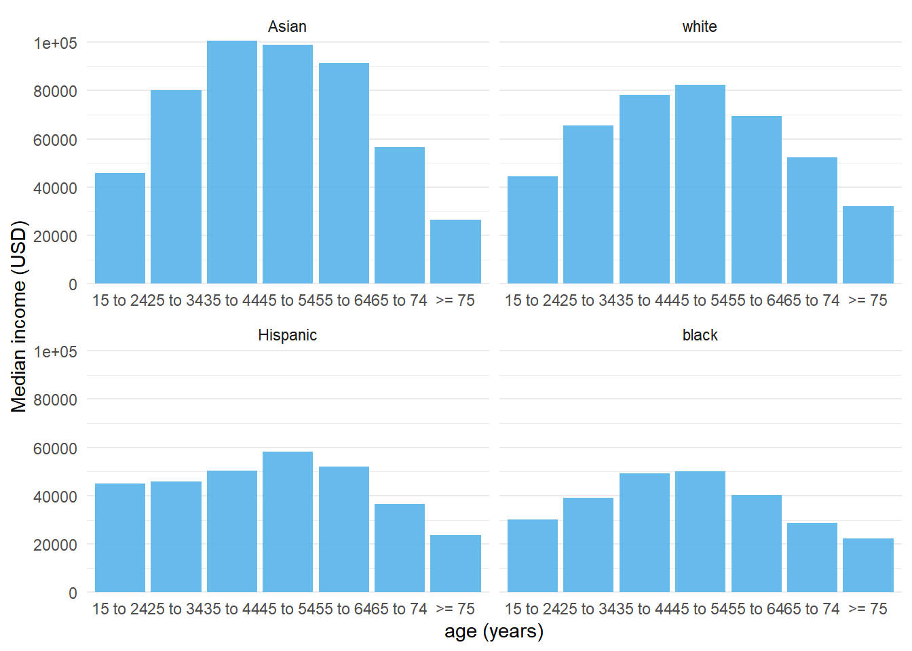
Dot plot & Heatmap
important limitation of bars is that they need to start at zero, so that the bar length is proportional to the amount shown.
막대는 금액을 시각화하는 유일한 옵션이 아닙니다. 막대의 한 가지 중요한 제한 사항은 막대 길이가 표시된 양에 비례하도록 0에서 시작해야 한다는 것입니다. 일부 데이터 세트의 경우 이는 비실용적이거나 주요 기능을 모호하게 할 수 있습니다. 이 경우 x 축 또는 y 축을 따라 적절한 위치에 점을 배치하여 금액을 표시할 수 있습니다.
Dot plot(gapminder)
library(gapminder)
df_america <- gapminder %>% filter(year == 2007,continent == "Americas")
df_america %>% ggplot(aes(x=lifeExp,y=reorder(country,lifeExp)))+
geom_point(color = "#0073b2",size = 3)+
scale_x_continuous(
name = "Life expectancy(years)",
limits = c(59,82),
expand = c(0,0))+
scale_y_discrete(name = NULL,expand = c(0,0.5))+
theme_minimal()+
theme(plot.margin = margin(18,6,3,1.5))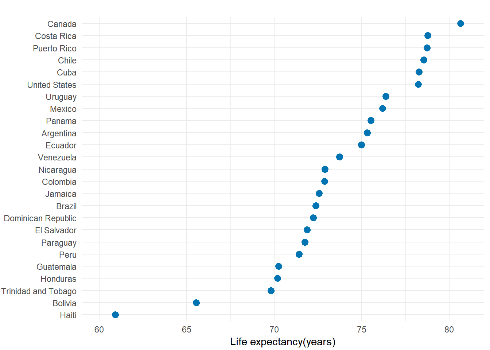
Dot plot(SW기술자 평균연봉)
data_sw_raw <- read.csv("https://raw.githubusercontent.com/Sungileo/trainsets_2/main/SW%EA%B8%B0%EC%88%A0%EC%9E%90_%ED%8F%89%EA%B7%A0%EC%9E%84%EA%B8%88_20220412145301.csv")
data_sw_21 <- data_sw_raw %>%
select(직무별,X2021) %>%
drop_na()
data_sw_21 %>% ggplot(aes(x=X2021,y=reorder(직무별,X2021)))+
geom_point(color = "#0073b2",size = 3)+
scale_x_continuous(
name = "평균임금",
limits = c(14.6e4,65e4),
expand = c(0,0),
labels = format(seq(2,6,1)*1e5,big.mark = ",",scientific = FALSE))+
scale_y_discrete(name = NULL,expand = c(0,0.5))+
theme_minimal()+
theme(plot.margin = margin(18,6,3,1.5))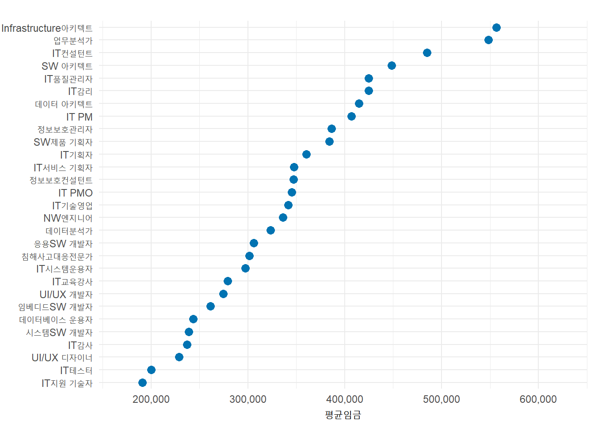
Tile plot(internet prevalce)
internet <- read.csv('https://raw.githubusercontent.com/Sungileo/trainsets_2/main/internet.csv')
country_list <- c("United States","China","India","Japan","Algeria","Brazil","Germany","France","United Kingdom","Italy","New Zealand","Canada","Mexico","Chile","Argentina","Norway","South Africa","Kenya","Israel","Iceland")
internet_short <- internet %>%
filter(country %in% country_list) %>%
mutate(users = ifelse(is.na(users),0,users))
internet_summary <- internet_short %>%
filter(year == 2016) %>%
arrange(users)
internet_short <- internet_short %>%
filter(year > 1993) %>%
mutate(country = factor(country,levels = internet_summary$country))
internet_short %>% ggplot(aes(x=year,y=country,fill=users))+
geom_tile(color = "white",linewidth = 0.25)+
scale_fill_viridis_c(
option = "A", begin = 0.05, end = 0.98,
limits = c(0,100), name = "Internet users / 100 people",
guide = guide_colorbar(
direction = "horizontal",
label.position = "bottom",
title.position = "top",
ticks = FALSE,
barwidth = grid::unit(3.5,"in"),
barheight = grid::unit(0.2,"in")))+
scale_x_continuous(expand = c(0,0),name = NULL)+
scale_y_discrete(name = NULL,position = "right")+
theme_minimal()+
theme(
axis.line = element_blank(),
axis.ticks = element_blank(),
panel.grid.major.x = element_blank(),
axis.ticks.x = element_blank(),
legend.position = "top",
legend.justification = "left",
legend.title.align = 0.5,
legend.title = element_text(size = 10))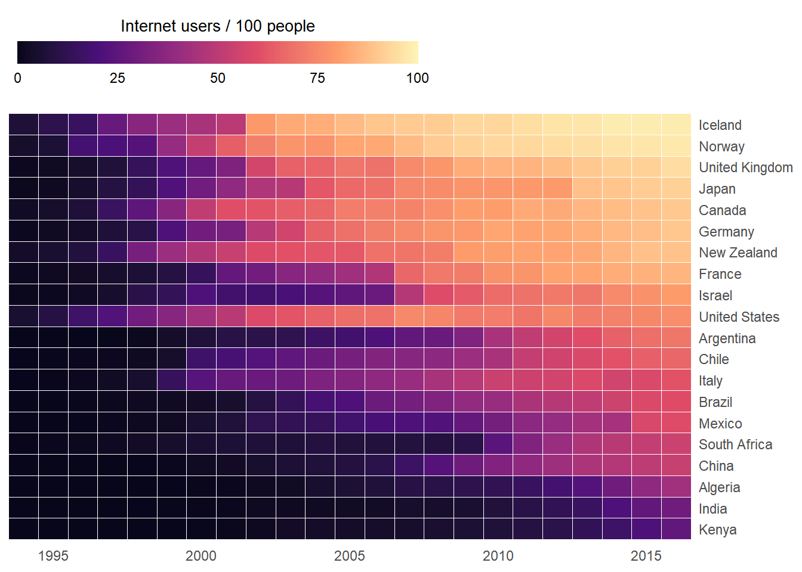
Tile plot(연령집단별 자살률)
data_rate_raw <- read.csv("https://raw.githubusercontent.com/Sungileo/trainsets_2/main/%EC%97%B0%EB%A0%B9%EC%A7%91%EB%8B%A8%EB%B3%84_%EC%9E%90%EC%82%B4%EB%A5%A0.csv")
data_rate_melt <- data_rate_raw %>%
reshape2::melt(id.vars = c("연령집단"),
variable.name = "년도",
value.name = "자살률") %>%
mutate(년도 = gsub("\\D","",년도) %>% as.integer())
data_rate_melt %>% ggplot(aes(x=년도,y=연령집단,fill=자살률))+
geom_tile(color = "white",linewidth = 0.25)+
scale_fill_viridis_c(
option = "A", begin = 0.05, end = 0.98,
limits = c(0,130), name = "연령집단(인구 십만 명당)",
guide = guide_colorbar(
direction = "horizontal",
label.position = "bottom",
title.position = "top",
ticks = FALSE,
barwidth = grid::unit(3.5,"in"),
barheight = grid::unit(0.2,"in")))+
scale_x_continuous(expand = c(0,0),name = NULL)+
scale_y_discrete(name = NULL,position = "right")+
theme_minimal()+
theme(
axis.line = element_blank(),
axis.ticks = element_blank(),
panel.grid.major.x = element_blank(),
axis.ticks.x = element_blank(),
legend.position = "top",
legend.justification = "left",
legend.title.align = 0.5,
legend.title = element_text(size = 10))
Histogram & Density plot
Single Distribution
titanic_all <- read.csv("https://raw.githubusercontent.com/Sungileo/trainsets_2/main/titanic_all.csv")
titanic_all <- titanic_all %>%
mutate(sex = factor(sex,levels = c("male","female")))
titanic_all %>%
filter(!is.na(age)) %>%
ggplot(aes(x=age))+
geom_histogram(breaks = seq(0,75,5),
color = "white",
fill="#56b4e9")+
scale_y_continuous(expand = c(0,0),
breaks = 25*(0:5))+
scale_x_continuous(expand = c(0,0),
limits = c(0,75),
name = "age (years)")+
theme_light()+
theme(panel.border = element_blank(),
panel.grid.major.x = element_blank(),
panel.grid.minor = element_blank(),
axis.line.x = element_blank(),
plot.margin = margin(3,7,3,1.5))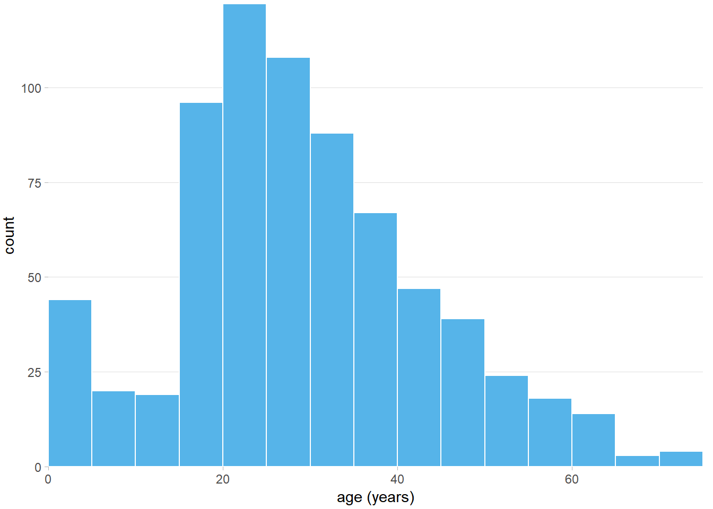
titanic_all %>% ggplot(aes(x=age))+
geom_density(fill = "#56b4e9",
color = "#01587a",
bw=2,
kernel = "gaussian")Warning: Removed 557 rows containing non-finite values (`stat_density()`).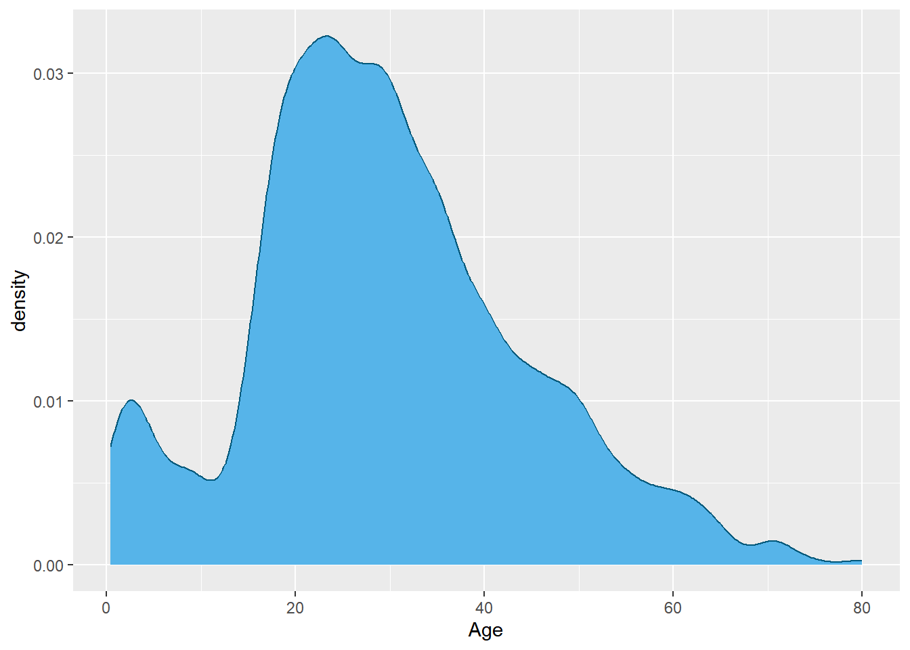
Multiple Distributions
titanic_all %>% ggplot(aes(x=age,
y=after_stat(count),
fill=sex))+
geom_density(bw=2,
kernel="gaussian",
alpha=0.5)+
scale_y_continuous(expand = c(0,0),
name = "Scaled Density")+
scale_x_continuous(name = "Age (years)",
limits = c(0,75),
expand = c(0,0))+
scale_fill_manual(values = c("#0072b2","#d55e00"),
name = "Gender")+
scale_color_manual(values = colorspace::darken(c("#0072b2","#d55e00"),0.5),
name = "Gender")+
theme_light()+
theme(panel.border = element_blank(),
panel.grid.major.x = element_blank(),
panel.grid.minor = element_blank(),
legend.position = c(0.8,0.8),
plot.margin = margin(3,7,3,1.5))Warning: Removed 557 rows containing non-finite values (`stat_density()`).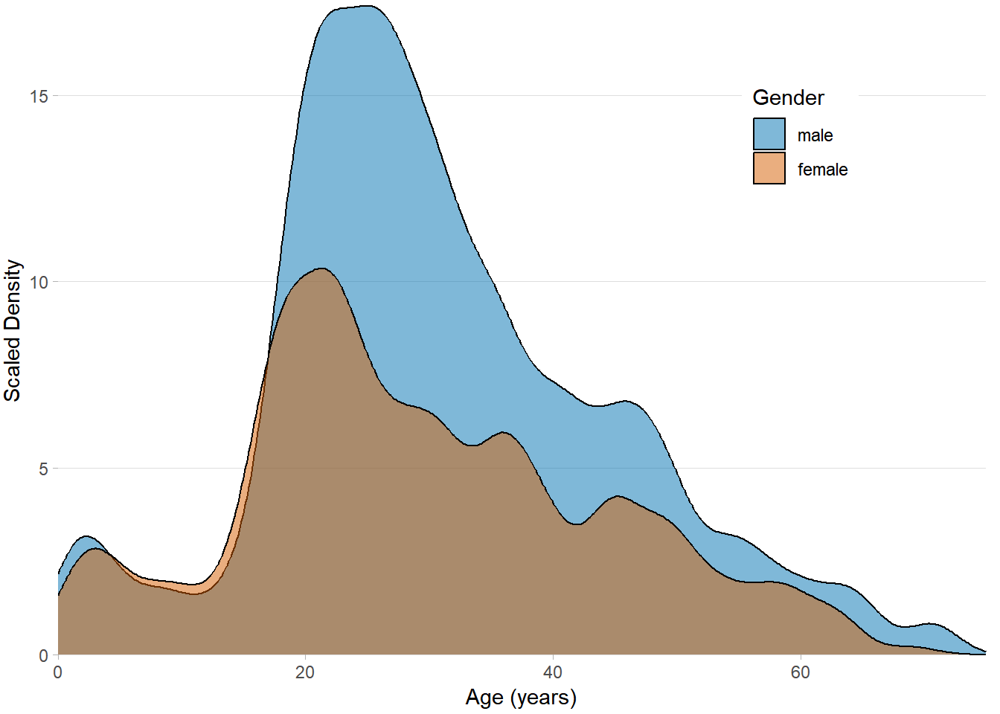
titanic_all %>% ggplot(aes(x=age,
y=after_stat(count)))+
geom_density(data = select(titanic_all,-sex),
aes(fill="all passengers"),
color = "transparent")+
geom_density(aes(fill=sex),bw=2,color="transparent")+
facet_wrap(~sex)+
scale_y_continuous(expand = c(0,0),
name = "Scaled Density")+
scale_x_continuous(name = "Age (years)",
limits = c(0,75),
expand = c(0,0))+
scale_fill_manual(
values = c("#b3b3b3a0","#d55e00","#0072b2"),
breaks = c("all passengers","male","female"),
labels = c("all passengers","males","females"),
name = NULL,
guide = guide_legend(direction = "horizontal"))+
theme_light()+
theme(panel.border = element_blank(),
panel.grid.major.x = element_blank(),
panel.grid.minor = element_blank(),
legend.position = "bottom",
strip.background = element_rect(fill="white"),
strip.text.x = element_text(colour = "black"))Warning: Removed 1114 rows containing non-finite values (`stat_density()`).Warning: Removed 557 rows containing non-finite values (`stat_density()`).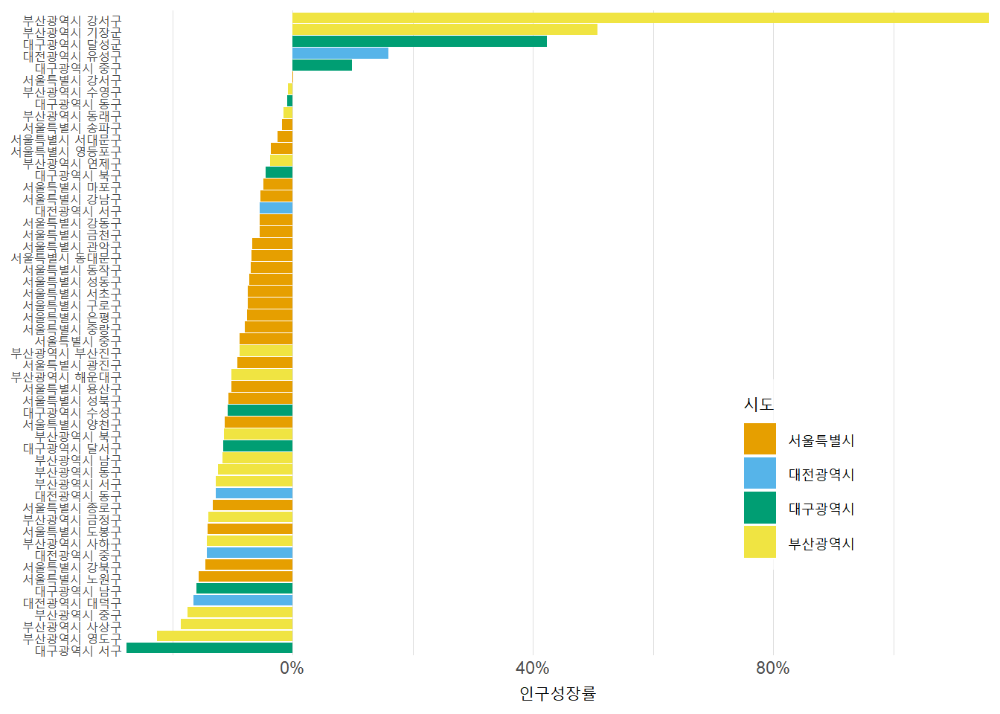
gender_counts <- data.frame(
age = (1:25)*3 - 1.5,
male = hist(filter(titanic_all,sex == "male")$age,
breaks = (0:25)*3+0.01,
plot = FALSE)$counts,
female = hist(filter(titanic_all,sex == "female")$age,
breaks = (0:25)*3+0.01,
plot = FALSE)$counts) %>%
reshape2::melt("age",
variable.name = "gender",
value.name = "count")
gender_counts %>% ggplot(aes(x=age,
y=ifelse(gender=="male",-1,1)*count,
fill=gender))+
geom_col()+
scale_x_continuous(name = "Age (years)",
limits = c(0,75),
expand = c(0,0))+
scale_y_continuous(name = "Count",
breaks = 20*(-2:1),
labels = c('40','20','0','20'))+
scale_fill_manual(values = c("#d55e00","#0072b2"),
guide = "none")+
coord_flip()+
cowplot::draw_text(x = 70, y = -39, "Male",hjust = 0)+
cowplot::draw_text(x = 70, y = 21, "Female",hjust = 0)+
theme_light()+
theme(panel.border = element_blank(),
panel.grid.minor = element_blank(),
axis.title.x = element_text(hjust = 0.61))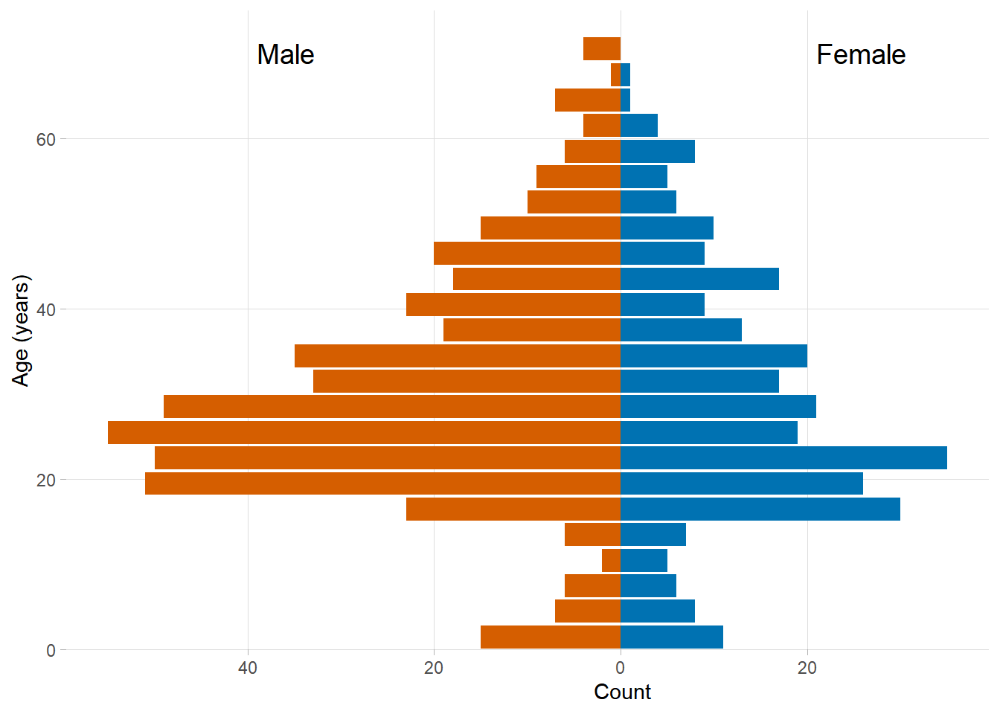
iris %>% ggplot(aes(x=Sepal.Length, color = Species, fill=Species))+
geom_density(alpha = 0.3)+
xlab("Sepal Length (cm)")+
ylab("Density")+
ggtitle("Iris Density Plot")+
theme_minimal()+
theme(panel.border = element_blank(),
panel.grid.minor = element_blank(),
legend.position = c(.82,.78))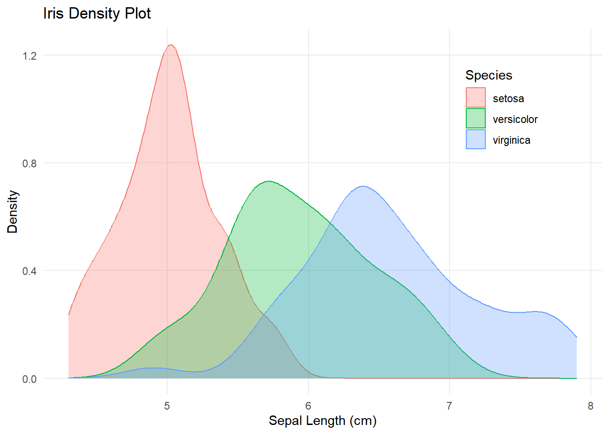
data_age_raw <- read.csv("C:/trainsets_2/행정안전부_지역별(법정동) 성별 연령별 주민등록 인구수_20230430.csv",fileEncoding = "CP949")
data_age_raw$법정동코드 <- data_age_raw$법정동코드 %>% as.character()
measure_col <- names(data_age_raw)[10:ncol(data_age_raw)]
data_age_melt <- data_age_raw %>%
select(-기준연월,-(시군구명:여자)) %>%
filter(시도명=="대전광역시") %>%
reshape2::melt(id.vars = c("법정동코드","시도명"),
measure.vars = measure_col,
variable.name = "나이_성별",
value.name = "인구수") %>%
mutate(나이_성별 = as.character(나이_성별))
data_age_melt <- data_age_melt %>%
mutate(age = gsub('\\D','',나이_성별) %>% as.integer(),
sex = substring(나이_성별,nchar(나이_성별)-1,nchar(나이_성별)))
age_len <- 5
data_age_cat <- data_age_melt %>%
mutate(age_cat = cut(age+0.1,breaks = seq(0,120,age_len),
labels = F)) %>%
group_by(age_cat) %>%
summarize(count = sum(인구수))
data_age_cat$age_cat <- age_len*(data_age_cat$age_cat-1)+age_len/2 data_age_cat %>% ggplot(aes(x=age_cat,y=count/1000))+
geom_col(fill="#56b4e9")+
scale_y_continuous(expand = c(0,0),name = "인구 (천)")+
scale_x_continuous(expand = c(0,0),name = "연령 (세)")+
theme_minimal()+
theme(panel.border = element_blank(),
panel.grid.major.x = element_blank(),
panel.grid.minor = element_blank(),
axis.line.x = element_blank(),
plot.margin = margin(3,7,3,1.5))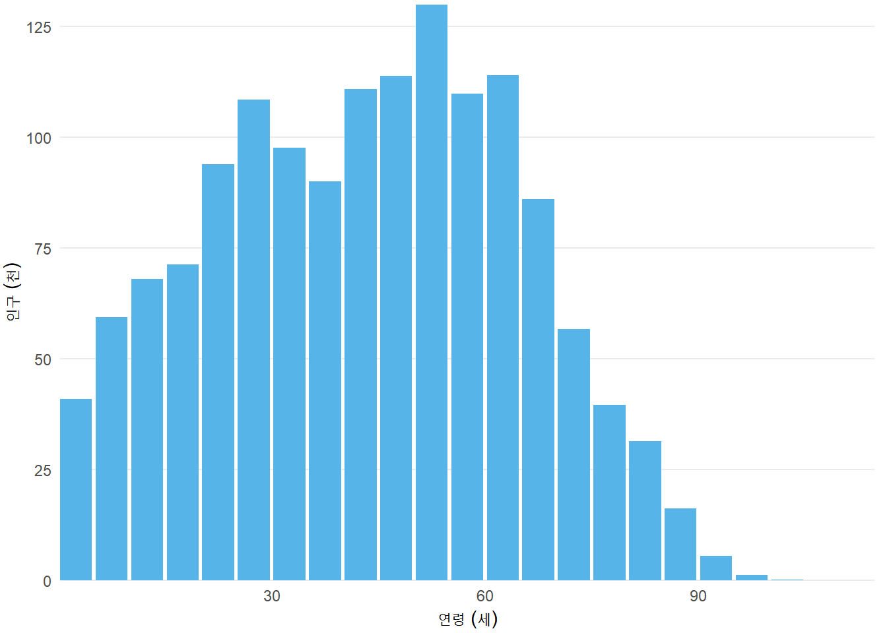
data_age_cat %>% ggplot(aes(x=age_cat,weight = count))+
geom_density(fill="#56b4e9",bw=3)+
scale_y_continuous(expand = c(0,0),name = "인구 (밀도)")+
scale_x_continuous(expand = c(0,0),name = "연령 (세)")+
theme_minimal()+
theme(panel.border = element_blank(),
panel.grid.major.x = element_blank(),
panel.grid.minor = element_blank(),
axis.line.x = element_blank(),
plot.margin = margin(3,7,3,1.5))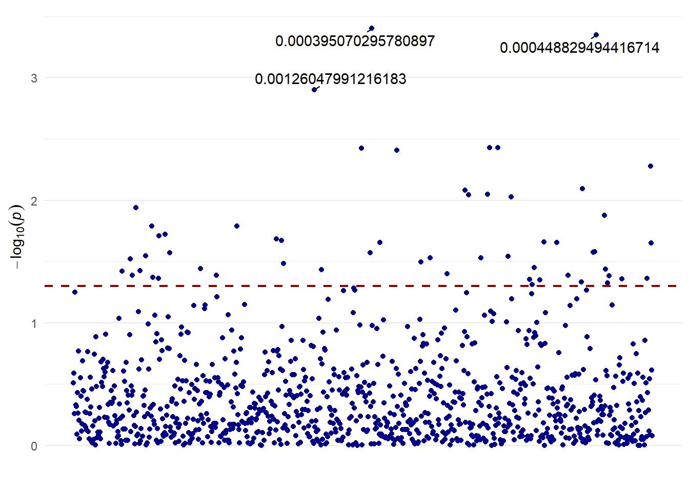
Visualizing distributions
Empirical cumulative distribution functions, and Q-Q plots
set.seed(4211)
points <- round(c(rnorm(47,mean=82,sd=10),45,51,67))
points[points>100] <- 100
student_data <- data.frame(points,rank=rank(points,ties.method = "random"))
student_data %>% ggplot(aes(x=points,y=50*after_stat(y)))+
stat_ecdf(geom = "step",color="#0072b2")+
geom_point(aes(y=rank),color = "#0072b2")+
scale_x_continuous(limits = c(40,102),
expand = c(0,0),
breaks = 10*(4:10))+
scale_y_continuous(limits = c(-5,55),
expand = c(0,0),
name="Student Rank (ascending)")+
theme_minimal()